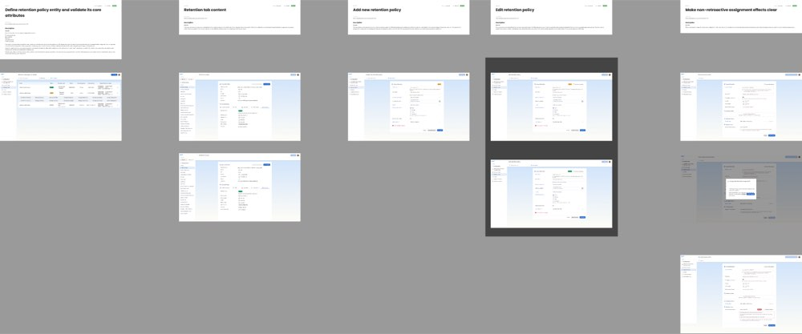

A retention policy is an object with a lifecycle, not a number typed into a document type. It outlives the documents it governs and usually outlives whoever configured it.

This is where we part company with the market. A compliance-focused DMS deletes automatically once the period lapses. RET-12 refuses: expiry moves the document into a disposition review queue and nothing is destroyed without an explicit, audited human decision.